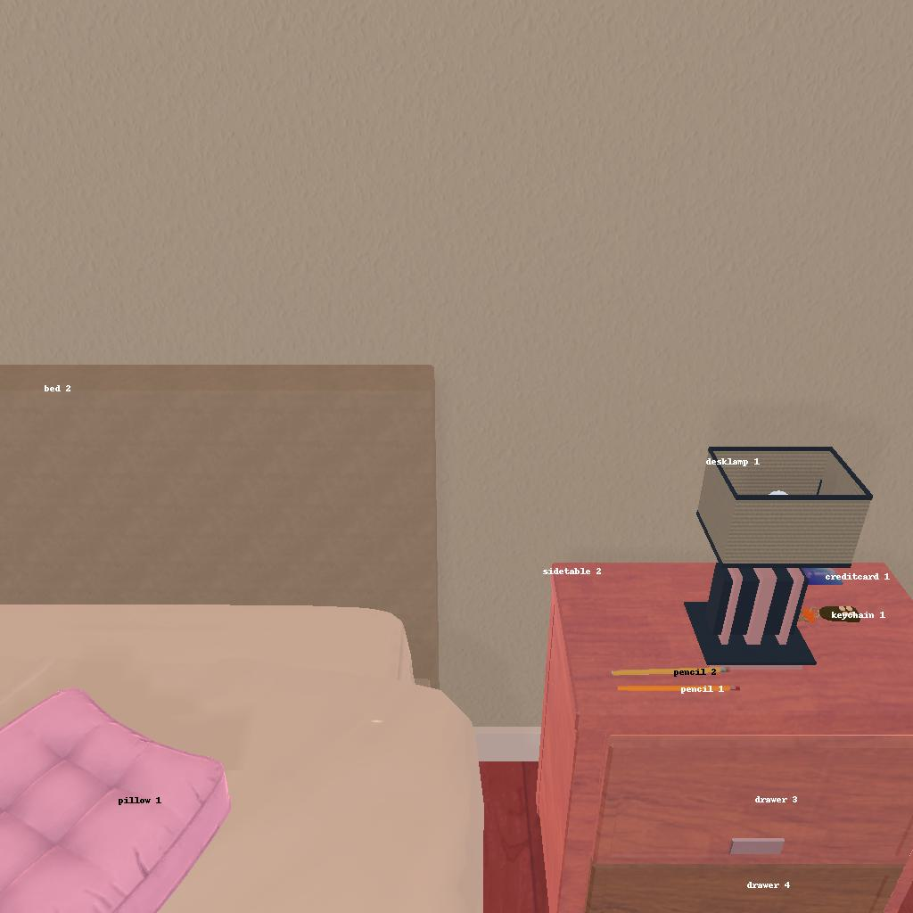

---------------------------------------------------------task: 2---------------------------------------------------------
--------------------------------------------------------------------------------------------------------------------------------------------------------------------
--------------------------------------------------------------------------------------------------------------------------------------------------------------------
Step:--------------------------------------------------------------------------10-------------------------------------------------------------------------------
----------------------------------------
VLM Prompt:
Image1:
Image2:
Image3:
**Instruction**
1. Analyze the provided image to identify all visible household objects, focusing on those relevant to the task description "examine the pen with the desklamp."
2. Use the analysis of the image and the task hint "The agent must find an object of the desired type, locate and turn on a light source with the desired object in-hand." to answer the question: what is the most reasonable action in the choices for the task description "examine the pen with the desklamp"?
4. Decide and write the answer using the template: The answer is: (i): , where i is the real number. If there is no desired object in the image, search every place based on **Initial Observation** to find the object. And if no one is exactly correct, choose a similar answer.
**Initial Observation**
You are in the middle of a room. Looking quickly around you, you can see bed (1-2), dresser (1), drawer (1-11), sidetable (1-2), desk (1), garbagecan (1), safe (1)
**Answer Choices**
(1): go to bed 1
(2): go to dresser 1
(3): go to bed 2
(4): go to drawer 1
(5): go to sidetable 1
(6): go to drawer 2
(7): go to drawer 3
(8): go to drawer 4
(9): go to desk 1
(10): go to garbagecan 1
(11): go to drawer 5
(12): go to drawer 6
(13): go to drawer 7
(14): go to drawer 8
(15): go to drawer 9
(16): go to drawer 10
(17): go to drawer 11
(18): go to safe 1
(19): take pillow 1 from sidetable 2
(20): take keychain 1 from sidetable 2
(21): take pencil 2 from sidetable 2
(22): take creditcard 1 from sidetable 2
(23): use desklamp 1
(24): examine sidetable 2
**Answer**
Let's think step by step by following the instructions.
----------------------------------------
----------------------------------------
Original Response:
First, we need to identify all visible household objects relevant to the task description "examine the pen with the desklamp." In the images, we can see a sidetable labeled "sidetable 2" with several items on it, including a "desklamp 1," "keychain 1," "creditcard 1," and two pencils labeled "pencil 1" and "pencil 2." Since the task description mentions examining the pen, we can assume that "pencil 1" or "pencil 2" could be the object of interest, although they are not explicitly labeled as pens.
Next, based on the task hint, the agent must find an object of the desired type, which in this case is a pen or pencil, and locate and turn on a light source with the desired object in-hand. The light source in this scenario is "desklamp 1."
Looking at the answer choices, we need to find the most reasonable action to complete the task description. The choices include going to various locations, taking items from sidetable 2, using the desklamp, or examining the sidetable.
The correct action would be to first take a pencil from the sidetable, as it is the closest object to a pen available, and then use the desklamp to examine it. Therefore, we should select the actions to take pencil 1 or pencil 2 and then use the desklamp.
The answer is: (21): take pencil 2 from sidetable 2, followed by (23): use desklamp 1.
----------------------------------------
----------------------------------------
>>> Refine Original VLM Response and Get Pure Action: take pencil 2 from sidetable 2, followed by (23): use desklamp 1
----------------------------------------
-----------------------------------------------------------------
Running time: 18.214038610458374 seconds
Total Money: 1.06389
-----------------------------------------------------------------
-----------------------------------------------------------------
Text Observation:You pick up the pencil 2 from the desklamp 1.
-----------------------------------------------------------------
UNSUCCEED